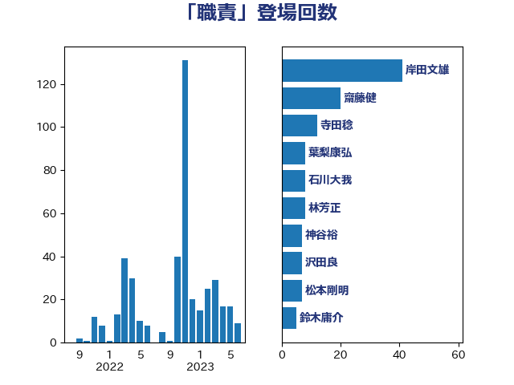

単語「職責」

| 岸田文雄 | 自由民主党 | 41 回 |
| 齋藤健 | 自由民主党 | 20 回 |
| 寺田稔 | 自由民主党 | 12 回 |
| 葉梨康弘 | 自由民主党 | 8 回 |
| 石川大我 | 立憲民主党 | 8 回 |
| 林芳正 | 自由民主党 | 8 回 |
| 神谷裕 | 立憲民主党 | 7 回 |
| 沢田良 | 日本維新の会 | 7 回 |
| 松本剛明 | 自由民主党 | 7 回 |
| 鈴木庸介 | 立憲民主党 | 5 回 |
| 杉田水脈 | 自由民主党 | 5 回 |
| 高木啓 | 自由民主党 | 4 回 |
| 鈴木貴子 | 自由民主党 | 4 回 |
| 鈴木義弘 | 国民民主党 | 4 回 |
| 鈴木宗男 | 日本維新の会 | 4 回 |
| 西銘恒三郎 | 自由民主党 | 4 回 |
| 米山隆一 | 立憲民主党 | 4 回 |
| 牧山ひろえ | 立憲民主党 | 4 回 |
| 武井俊輔 | 自由民主党 | 4 回 |
| 梅村みずほ | 日本維新の会 | 4 回 |
| 岡本三成 | 公明党 | 4 回 |
| 山田賢司 | 自由民主党 | 4 回 |
| 勝部賢志 | 立憲民主党 | 4 回 |
| 音喜多駿 | 日本維新の会 | 3 回 |
| 野村哲郎 | 自由民主党 | 3 回 |
| 西岡秀子 | 国民民主党 | 3 回 |
| 簗和生 | 自由民主党 | 3 回 |
| 秋本真利 | 無所属 | 3 回 |
| 浜田聡 | NHK党 | 3 回 |
| 末松信介 | 自由民主党 | 3 回 |
| 有村治子 | 自由民主党 | 3 回 |
| 平木大作 | 公明党 | 3 回 |
| 岩田和親 | 自由民主党 | 3 回 |
| 山岸一生 | 立憲民主党 | 3 回 |
| 小倉將信 | 自由民主党 | 3 回 |
| 大串博志 | 立憲民主党 | 3 回 |
| 吉川ゆうみ | 自由民主党 | 3 回 |
| 丸川珠代 | 自由民主党 | 3 回 |
| 鬼木誠 | 立憲民主党 | 2 回 |
| 青山周平 | 自由民主党 | 2 回 |
| 階猛 | 立憲民主党 | 2 回 |
| 菊田真紀子 | 立憲民主党 | 2 回 |
| 細田博之 | 自由民主党 | 2 回 |
| 秋野公造 | 公明党 | 2 回 |
| 牧野たかお | 自由民主党 | 2 回 |
| 津島淳 | 自由民主党 | 2 回 |
| 永岡桂子 | 自由民主党 | 2 回 |
| 横山信一 | 公明党 | 2 回 |
| 村田享子 | 立憲民主党 | 2 回 |
| 本田太郎 | 自由民主党 | 2 回 |
| 斉藤鉄夫 | 公明党 | 2 回 |
| 平林晃 | 公明党 | 2 回 |
| 尾辻秀久 | 無所属 | 2 回 |
| 小田原潔 | 自由民主党 | 2 回 |
| 宮本岳志 | 日本共産党 | 2 回 |
| 大家敏志 | 自由民主党 | 2 回 |
| 井上貴博 | 自由民主党 | 2 回 |
| 中西健治 | 自由民主党 | 2 回 |
| 三宅伸吾 | 自由民主党 | 2 回 |
| 高橋千鶴子 | 日本共産党 | 1 回 |
| 高木毅 | 自由民主党 | 1 回 |
| 青山繁晴 | 自由民主党 | 1 回 |
| 鎌田さゆり | 立憲民主党 | 1 回 |
| 鈴木英敬 | 自由民主党 | 1 回 |
| 鈴木俊一 | 自由民主党 | 1 回 |
| 野田佳彦 | 立憲民主党 | 1 回 |
| 酒井庸行 | 自由民主党 | 1 回 |
| 赤羽一嘉 | 公明党 | 1 回 |
| 豊田俊郎 | 自由民主党 | 1 回 |
| 谷田川元 | 立憲民主党 | 1 回 |
| 西村明宏 | 自由民主党 | 1 回 |
| 西村康稔 | 自由民主党 | 1 回 |
| 藤木眞也 | 自由民主党 | 1 回 |
| 荒井優 | 立憲民主党 | 1 回 |
| 舟山康江 | 国民民主党 | 1 回 |
| 笹川博義 | 自由民主党 | 1 回 |
| 笠井亮 | 日本共産党 | 1 回 |
| 竹内譲 | 公明党 | 1 回 |
| 神田潤一 | 自由民主党 | 1 回 |
| 石田昌宏 | 自由民主党 | 1 回 |
| 石橋通宏 | 立憲民主党 | 1 回 |
| 石垣のりこ | 立憲民主党 | 1 回 |
| 矢倉克夫 | 公明党 | 1 回 |
| 田村貴昭 | 日本共産党 | 1 回 |
| 田名部匡代 | 立憲民主党 | 1 回 |
| 猪口邦子 | 自由民主党 | 1 回 |
| 片山大介 | 日本維新の会 | 1 回 |
| 浮島智子 | 公明党 | 1 回 |
| 浅川義治 | 日本維新の会 | 1 回 |
| 河野義博 | 公明党 | 1 回 |
| 池下卓 | 日本維新の会 | 1 回 |
| 榛葉賀津也 | 国民民主党 | 1 回 |
| 梅谷守 | 立憲民主党 | 1 回 |
| 根本匠 | 自由民主党 | 1 回 |
| 松野博一 | 自由民主党 | 1 回 |
| 杉本和巳 | 日本維新の会 | 1 回 |
| 木村次郎 | 自由民主党 | 1 回 |
| 木原稔 | 自由民主党 | 1 回 |
| 新谷正義 | 自由民主党 | 1 回 |
| 平口洋 | 自由民主党 | 1 回 |
| 岩谷良平 | 日本維新の会 | 1 回 |
| 岡本あき子 | 立憲民主党 | 1 回 |
| 山口俊一 | 自由民主党 | 1 回 |
| 小野泰輔 | 日本維新の会 | 1 回 |
| 小野寺五典 | 自由民主党 | 1 回 |
| 小西洋之 | 立憲民主党 | 1 回 |
| 小渕優子 | 自由民主党 | 1 回 |
| 小沢雅仁 | 立憲民主党 | 1 回 |
| 小川淳也 | 立憲民主党 | 1 回 |
| 寺田学 | 立憲民主党 | 1 回 |
| 宮内秀樹 | 自由民主党 | 1 回 |
| 安江伸夫 | 公明党 | 1 回 |
| 安住淳 | 立憲民主党 | 1 回 |
| 守島正 | 日本維新の会 | 1 回 |
| 大塚拓 | 自由民主党 | 1 回 |
| 大口善徳 | 公明党 | 1 回 |
| 土田慎 | 自由民主党 | 1 回 |
| 國重徹 | 公明党 | 1 回 |
| 吉田宣弘 | 公明党 | 1 回 |
| 吉田とも代 | 日本維新の会 | 1 回 |
| 吉川元 | 立憲民主党 | 1 回 |
| 古川禎久 | 自由民主党 | 1 回 |
| 古川直季 | 自由民主党 | 1 回 |
| 古屋範子 | 公明党 | 1 回 |
| 務台俊介 | 自由民主党 | 1 回 |
| 伊藤岳 | 日本共産党 | 1 回 |
| 伊藤孝恵 | 国民民主党 | 1 回 |
| 伊東良孝 | 自由民主党 | 1 回 |
| 仁木博文 | 無所属 | 1 回 |
| 井林辰憲 | 自由民主党 | 1 回 |
| 井上英孝 | 日本維新の会 | 1 回 |
| 井上哲士 | 日本共産党 | 1 回 |
| 丹羽秀樹 | 自由民主党 | 1 回 |
| 中根一幸 | 自由民主党 | 1 回 |
| 中司宏 | 日本維新の会 | 1 回 |
| 上野通子 | 自由民主党 | 1 回 |
| 上田清司 | 国民民主党 | 1 回 |
| おおつき紅葉 | 立憲民主党 | 1 回 |